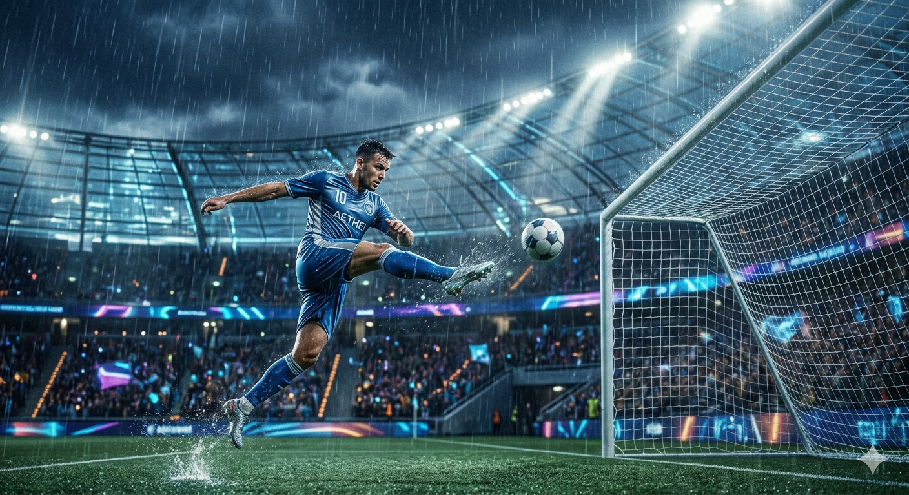
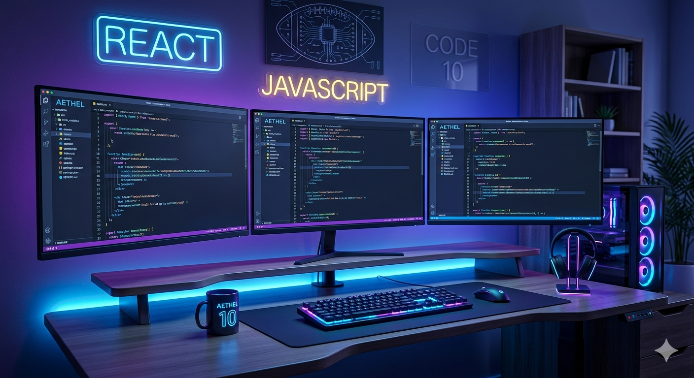

Mes Passions

Football
Le football est bien plus qu’un sport pour moi, c’est une véritable passion. J’aime jouer, suivre les matchs et analyser les performances des équipes. Ce sport m’a appris la discipline, l’esprit d’équipe et la persévérance.

Développement Web
Le développement web est une passion qui me permet de créer, d’innover et de résoudre des problèmes. J’aime concevoir des interfaces modernes et apprendre de nouvelles technologies pour améliorer mes compétences.